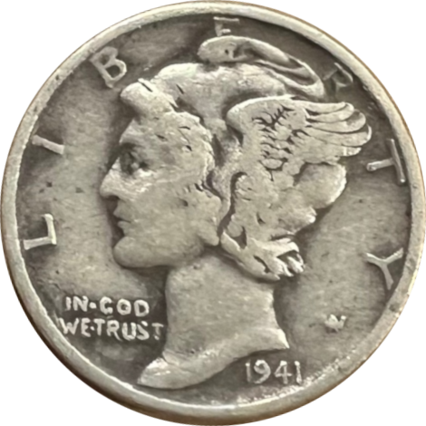

<mat-toolbar color="primary">
<!--    -->
    <fa-icon class="app-navbar-logo" [icon]="appIcon"></fa-icon>
    <span>
        {{appName}}
    </span>
    <span class="app-spacer"></span>
<!--    <button-->
<!--        mat-icon-button-->
<!--        class="example-icon favorite-icon"-->
<!--        aria-label="Example icon-button with heart icon"-->
<!--    >-->
<!--        <mat-icon>-->
<!--            favorite-->
<!--        </mat-icon>-->
<!--    </button>-->
<!--    <button-->
<!--        mat-icon-button-->
<!--        class="example-icon"-->
<!--        aria-label="Example icon-button with share icon"-->
<!--    >-->
<!--        <mat-icon>-->
<!--            share-->
<!--        </mat-icon>-->
<!--    </button>-->
</mat-toolbar>
